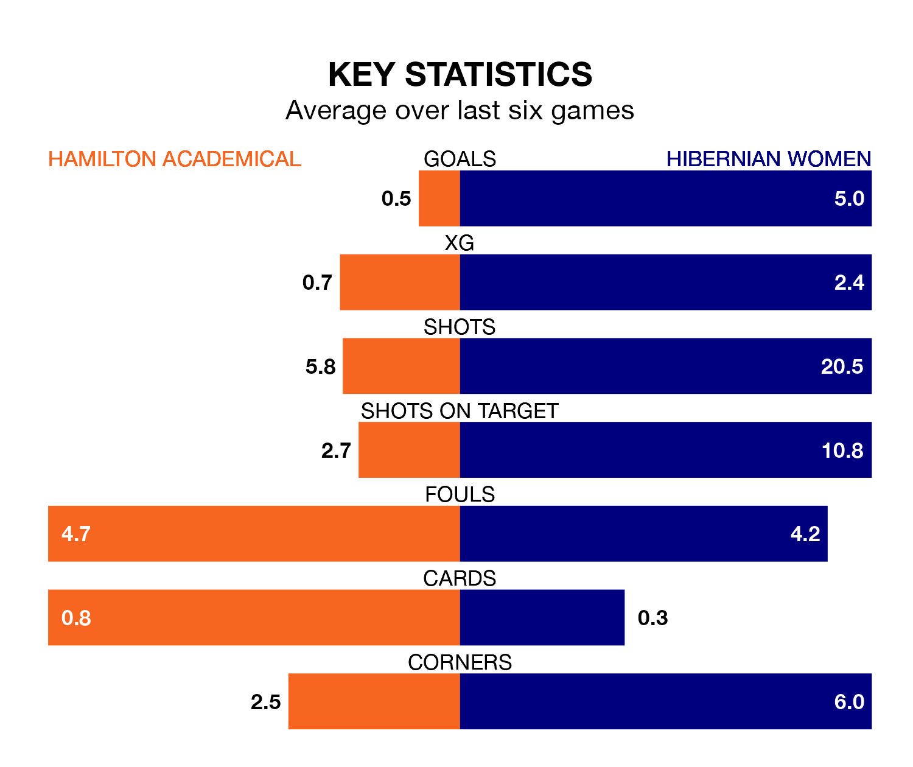

Relegation candidates Hamilton Academical face a challenge against high-flying Hibernian Women at the ZLX Stadium on Sunday.
Hamilton Academical are rooted to the bottom of the SWPL 1 table, and have picked up no wins and three draws in their 16 games to date.
Hibs, meanwhile, are fourth in the standings with 29 points, having won nine and drawn two, and are 17 points behind table-toppers Rangers W.
Hamilton Academical are in terrible form in SWPL 1, with no wins and a draw from their last six games.
With five wins and one loss over that period, Hibernian's form is much better – they have taken 15 points from 18, compared to the Accies's one.
With 10 goals in 16 games so far this season, the home side are the league's lowest scorers with 0.6 goals per game. And they are conceding more than average, letting in 68 goals at a rate of 4.2 per game.
Hibs, meanwhile, are above average scorers, with 2.8 goals per game, compared to a league average of 2.2. They have conceded 1.6 goals per game.
In Jorian Baucom, the visitors have one of the league's sharpest shooters so far this season. She has notched 14 goals in 16 appearances, to sit third in the scoring charts.
Her goal rate of one every 81 minutes is much quicker than that of Josephine Giard, Hamilton Academical's top scorer with a goal every 224 minutes, and a total of six goals in 16 games.
Over the last year, Hamilton Academical and Hibernian have played each other twice. Hibernian won both of them.
Their last meeting was on October 22, when Hibernian won 8-1 at home.
Hamilton Academical's last match was on December 17, a 4-0 loss against Rangers Women.
Hibernian beat Aberdeen 7-0 last time out, on December 16, with Baucom (three), Brooke Nunn (two), Kirsty Morrison and Shannon McGregor on the scoresheet.
Updated: 10:50, 10/01/24